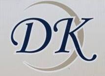
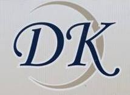

The goal and vision of the Dawn Koehler Insurance Agency website is to create an informative space that will attract people to reach out and make an appointment.
My role for DK Insurance is to turn an out of the box cookie cutter site into something her user's will find easy to use, but engaging.
The first step in helping DK was to establish a brand and identity. Dawn wanted her prospective customers to know exactly what she could do for them with a quick glance.
After a few conversation with Dawn, I knew the best way to get a feel for how she does business was to see her work her magic in person. Luckily, she was having a Nationwide event sponsored by the infamous Dale Jr.
After spending the day with one of the kindest saleswomen I have ever met, I had a pretty good idea of where to start with a prototype to save some precious time with all of the manual data entry.
 
